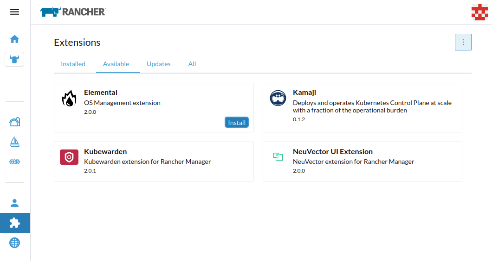
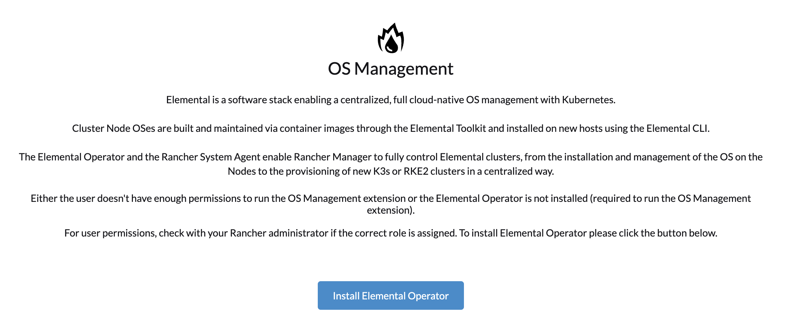
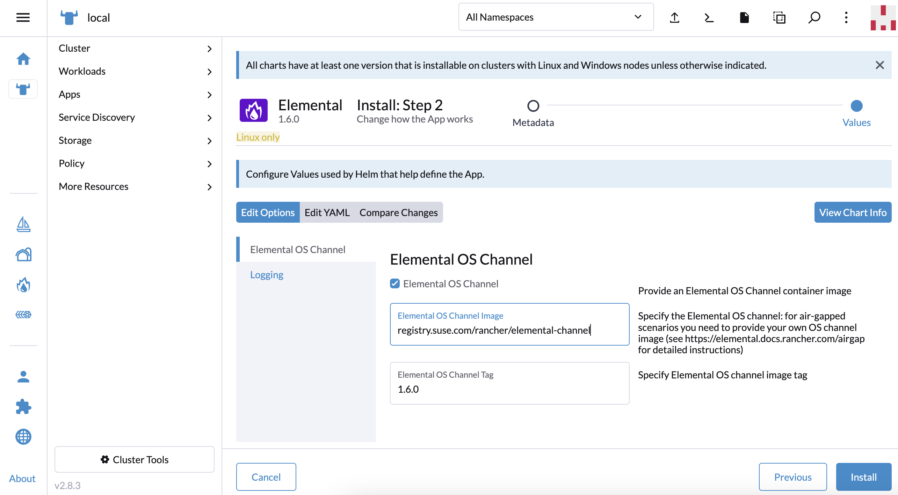
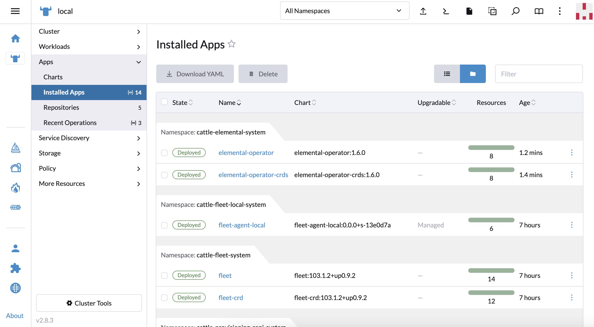
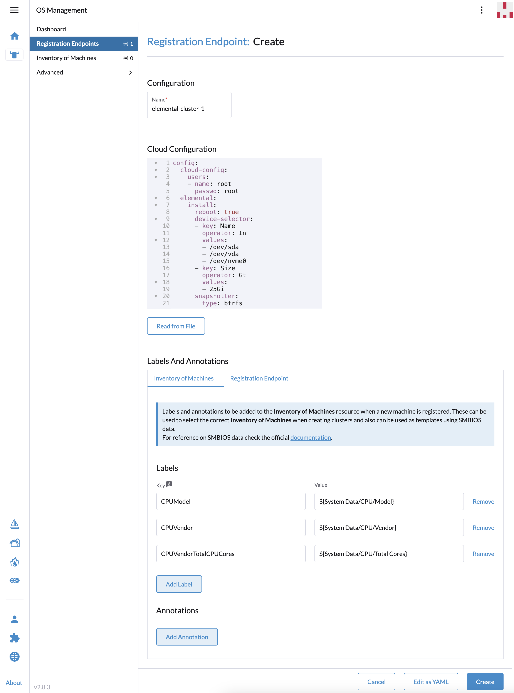
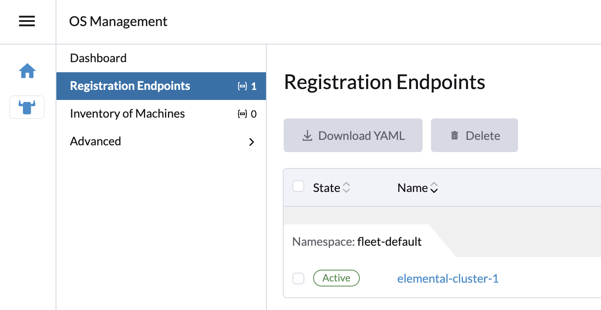
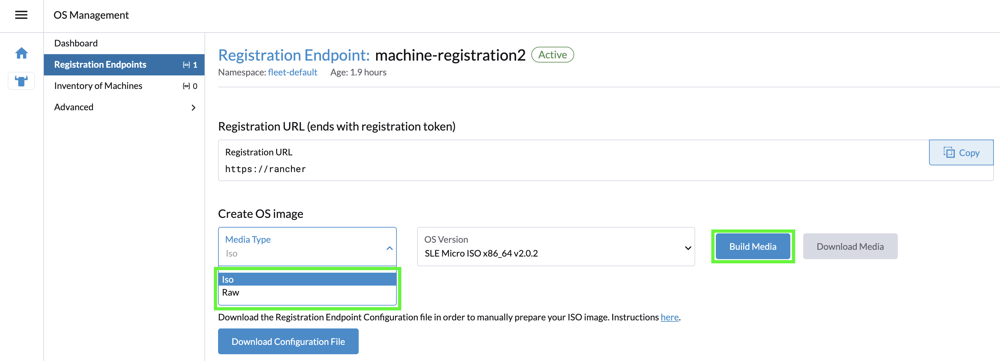
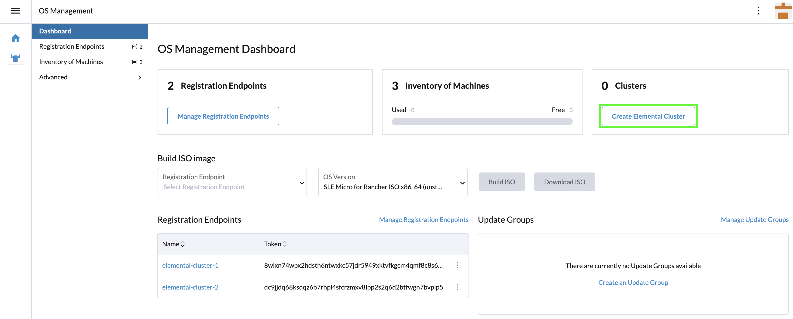

|
Ce document a été traduit à l'aide d'une technologie de traduction automatique. Bien que nous nous efforcions de fournir des traductions exactes, nous ne fournissons aucune garantie quant à l'exhaustivité, l'exactitude ou la fiabilité du contenu traduit. En cas de divergence, la version originale anglaise prévaut et fait foi. |
SUSE® Rancher Prime: OS Manager la manière visuelle
|
Les instructions suivantes nécessitent au moins Rancher 2.9.x. |
Ce guide rapide vous montrera comment déployer le plugin et l’opérateur SUSE® Rancher Prime: OS Manager dans une instance existante de Rancher Manager.
Une fois installé, vous pourrez provisionner un nouveau cluster SUSE® Rancher Prime: OS Manager basé sur RKE2 ou K3s.
Cependant, si vous souhaitez installer l’opérateur de staging ou de développement, vous ne pouvez le faire qu’en mode CLI.
Ajouter le dépôt officiel des extensions Rancher
Si l’extension Elemental n’est pas disponible, vous devez ajouter le Official Rancher Extensions Repository :

Si ce dépôt ne peut pas être ajouté via les paramètres de l’interface utilisateur des extensions, il peut être géré manuellement en ajoutant le dépôt https://github.com/rancher/ui-plugin-charts git, ou alternativement en appliquant la ressource suivante :
apiVersion: catalog.cattle.io/v1
kind: ClusterRepo
metadata:
name: rancher-ui-charts
spec:
gitBranch: main
gitRepo: https://github.com/rancher/ui-plugin-chartsInstaller le plugin élémentaire
Après que le support des extensions de Rancher Manager soit activé, vous pouvez installer le plugin elemental comme suit :
-
Sous l’onglet
Available, vous verrez le pluginelementaldisponible

|
Si l’onglet |
-
Cliquez sur le bouton
Install, une fenêtre contextuelle apparaîtra et cliquez à nouveau surInstallpour continuer.

-
Dans l’onglet
Installed, le pluginelementalest maintenant listé.
|
Si le plugin |
Une fois le plugin elemental installé, vous pouvez voir l’option OS Management dans le menu Rancher Manager, rafraîchissez la page si vous ne la voyez pas.

Installez l’opérateur élémentaire
|
Le guide suivant vous montrera comment installer l’opérateur via l’interface utilisateur SUSE® Rancher Prime: OS Manager. Mais vous pouvez également l’installer directement depuis le Marketplace. |
Cliquez sur le bouton de gestion du système d’exploitation dans le menu de navigation.
Si l’opérateur n’est pas déjà installé, l’interface utilisateur élémentaire vous permettra de le déployer en cliquant sur le bouton Install SUSE® Rancher Prime: OS Manager Operator :

Cela vous redirigera vers le Marketplace Rancher pour installer l’opérateur.
Cliquez sur le bouton Next :

Dans cet écran, vous pouvez personnaliser ou utiliser les valeurs par défaut, cliquez sur Install pour continuer :

Vous devriez voir elemental-operator-CRDet elemental-operator déployés dans l’espace de noms cattle-elemental-system :

|
Si vous ne les voyez pas, assurez-vous de sélectionner l’espace de noms correct en haut de la page. |
Ajoutez un point de terminaison d’enregistrement de machine
Dans le tableau de bord de gestion du système d’exploitation, cliquez sur le bouton Create Registration Endpoint.

Maintenant, ici, soit vous pouvez entrer chaque détail dans ses emplacements respectifs, soit vous pouvez modifier cela en YAML et créer le point de terminaison en une seule fois. Ici, nous allons modifier tous les champs.

|
Options principales
|
Une fois que vous avez créé le point de terminaison d’enregistrement de la machine, il devrait apparaître comme actif.

Préparation de l’image d’installation (seed)
Maintenant, c’est la dernière étape, vous devez préparer une image seed qui inclut la configuration d’enregistrement initiale, afin qu’elle puisse être enregistrée automatiquement, installée et entièrement déployée dans votre cluster. Le contenu du fichier n’est rien d’autre que l’URL d’enregistrement dont le nœud a besoin pour s’enregistrer et le certificat de serveur approprié, afin qu’il puisse se connecter en toute sécurité.
Cette image seed peut ensuite être utilisée pour provisionner un nombre infini de machines.
L’image seed est créée en tant que ressource Kubernetes ci-dessus et peut être construite en utilisant le bouton Build Media, mais d’abord, vous devez sélectionner une image ISO ou RAW.
Contrairement à l’ISO qui nécessite deux périphériques (un périphérique avec l’ISO et un autre disque où installer SUSE® Rancher Prime: OS Manager), l’image RAW permet de démarrer à partir d’un seul périphérique et d’installer directement le système d’exploitation sur le périphérique. L’image RAW ne contient qu’une partition de démarrage et une partition de récupération et elle démarre d’abord en mode de récupération pour installer SUSE® Rancher Prime: OS Manager (pour information, le processus est similaire à celui de réinitialiser).

Une fois la construction terminée, les médias peuvent être téléchargés en utilisant le bouton Download Media :

Vous pouvez maintenant démarrer vos nœuds avec cette image et ils vont :
-
Inscrivez-vous avec l’URL d’enregistrement donnée et créez un
MachineInventorypar machine -
Installez SLE Micro sur le dispositif donné
-
Redémarrer
Inventaire des machines
Lorsque les nœuds démarrent pour la première fois, ils se connectent à Rancher Manager et un Machine Inventory est créé pour chaque nœud.

Les colonnes personnalisées sont basées sur Machine Inventory Labels que vous pouvez ajouter lorsque vous créez votre Machine Registration Endpoint :

Sur la capture d’écran suivante, Hardware Labels sont utilisés comme colonnes personnalisées :
Vous pouvez également ajouter des colonnes personnalisées en cliquant sur le menu trois points.

Enfin, vous pouvez également filtrer votre Machine Inventory en utilisant ces étiquettes.
Par exemple, si vous souhaitez uniquement voir vos machines AMD, vous pouvez filtrer sur CPUModel comme ci-dessous :

Créez votre premier SUSE® Rancher Prime: OS Manager Cluster
Maintenant, utilisons ces Machine Inventory pour créer un cluster en cliquant sur Create SUSE® Rancher Prime: OS Manager Cluster :

Pour votre cluster SUSE® Rancher Prime: OS Manager, vous pouvez choisir K3s ou RKE2 pour Kubernetes.

La plupart des options proviennent de Rancher, c’est pourquoi nous ne détaillerons pas toutes les possibilités. N’hésitez pas à consulter la documentation de configuration de la distribution K3s de Rancher Manager ou la documentation de configuration de la distribution RKE2 de Rancher Manager si vous souhaitez en savoir plus.
Cependant, il est important de mettre en avant la section Inventory of Machines Selector Template.
Cela vous permet de choisir quel Machine Inventory vous souhaitez utiliser pour créer votre cluster SUSE® Rancher Prime: OS Manager en utilisant le Machine Inventory Labels défini précédemment :

Comme nos trois inventaires de machines contiennent l’étiquette CPUVendor avec la clé AuthenticAMD, les trois machines seront utilisées pour créer le cluster SUSE® Rancher Prime: OS Manager.